Histogram Plots
histogram.Rmd1. Introduction
This vignette documents and illustrates workflows for producing
histograms using the function plotHistogram from the
ospsuite.plots package.
1.1 Setup
This vignette uses the {ospsuite.plots} and
tidyr libraries. We will use the default settings of
{ospsuite.plots} (see vignette(“ospsuite.plots”, package =
“ospsuite.plots”)) but will adjust the legend position.
library(ospsuite.plots)
#> Loading required package: ggplot2
library(tidyr)
# Set Defaults
oldDefaults <- ospsuite.plots::setDefaults()
# Place default legend position above the plot for clearer histogram plots
theme_update(legend.position = "top")
theme_update(legend.direction = "horizontal")
theme_update(legend.title = element_blank())1.2 Example Data
This vignette uses the following datasets:
- Data Set 1:
histData <- exampleDataCovariates %>%
dplyr::filter(SetID == "DataSet1") %>%
dplyr::select(c("ID", "Sex", "Age", "AgeBin", "Ratio"))
# Metadata
metaData <- attr(exampleDataCovariates, "metaData")
metaData <- metaData[intersect(names(histData), names(metaData))]
knitr::kable(head(histData), digits = 2, caption = "First rows of example data.")| ID | Sex | Age | AgeBin | Ratio |
|---|---|---|---|---|
| 1 | Male | 48 | Adults | 0.72 |
| 2 | Male | 36 | Adults | 1.31 |
| 3 | Male | 52 | Adults | 0.96 |
| 4 | Male | 47 | Adults | 0.81 |
| 5 | Male | 0 | Peds | 2.69 |
| 6 | Male | 48 | Adults | 2.16 |
knitr::kable(metaData2DataFrame(metaData), digits = 2, caption = "List of meta data")| Age | Ratio | |
|---|---|---|
| dimension | Age | Ratio |
| unit | yrs |
- Data Set 2:
histDataDistr <- exampleDataCovariates %>%
dplyr::filter(SetID == "DataSet2") %>%
dplyr::select(c("ID", "AgeBin", "Sex", "Obs"))
# Metadata for Distribution Data
metaDataDistr <- attr(exampleDataCovariates, "metaData")
metaDataDistr <- metaDataDistr[intersect(names(histDataDistr), names(metaDataDistr))]
knitr::kable(head(histDataDistr), digits = 2, caption = "First rows of distribution data.")| ID | AgeBin | Sex | Obs |
|---|---|---|---|
| 1 | adult | Female | 28.81 |
| 2 | adult | Male | 77.48 |
| 3 | adult | Female | 35.86 |
| 4 | adult | Male | 62.71 |
| 5 | adult | Female | 30.48 |
| 6 | adult | Male | 74.24 |
knitr::kable(metaData2DataFrame(metaDataDistr), digits = 2, caption = "List of meta data for distribution data")| Obs | |
|---|---|
| dimension | Clearance |
| unit | dL/h/kg |
2. Examples
2.1 Illustration of Basic Histograms
2.1.1 Basic Example
Histogram of the “Ratio” column mapped to x, stratified
by the “Sex” column mapped to fill.
plotHistogram(
data = histData,
mapping = aes(x = Ratio, fill = Sex),
metaData = metaData
)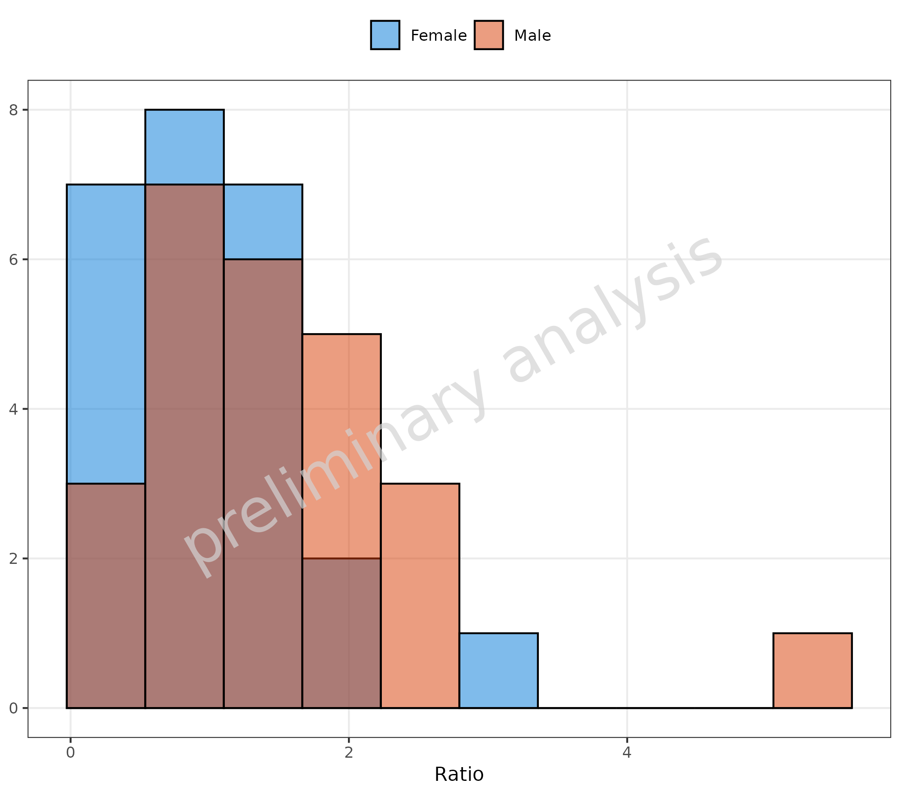
2.1.2 Basic Example: Change of Defaults
The variable geomHistAttributes is set by default to
getDefaultGeomAttributes("Hist"), which is a list with
entries bins = 10 and
position = ggplot2::position_nudge().
In the example below, the variable geomHistAttributes is
set to a list with entry position = "dodge". This changes
the position, but note that the default value of
geomHistAttributes contains the entry
bins = 10, which is now overwritten, and the default
{ggplot} number of 30 is used.
plotHistogram(
data = histData,
mapping = aes(x = Ratio, groupby = Sex),
metaData = metaData,
geomHistAttributes = list(position = "dodge")
)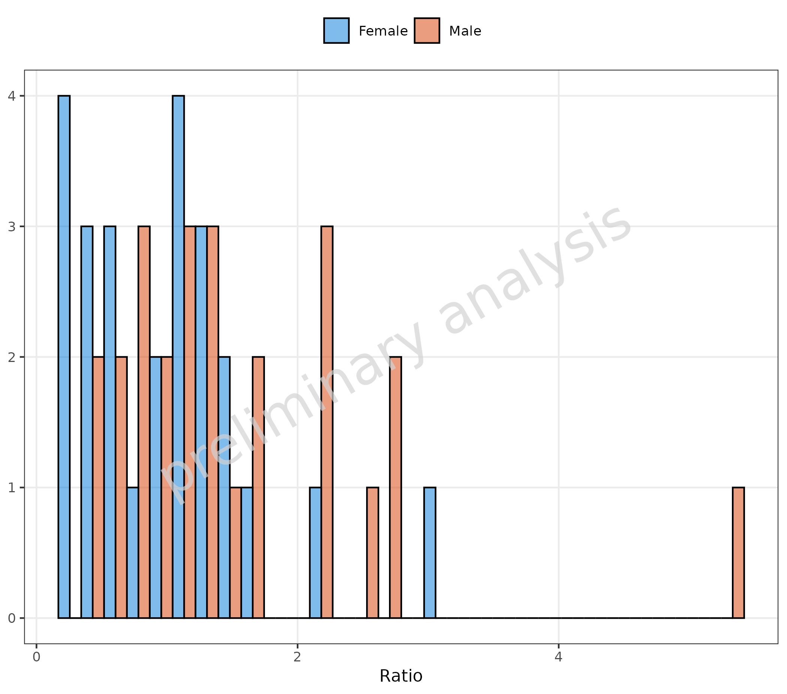
2.1.3 Basic Example: Change of Position but Keep Number of Bins
To preserve the default settings, we modified the variable with
utils::modifyList(getDefaultGeomAttributes("Hist"), list(position = "stack")).
This changes the position but preserves the number of bins.
plotHistogram(
data = histData,
mapping = aes(x = Ratio, groupby = Sex),
metaData = metaData,
geomHistAttributes = utils::modifyList(
getDefaultGeomAttributes("Hist"),
list(position = "stack")
)
)2.1.4 Basic Example: Overlay of Histograms
By setting the position to identity and setting
alpha to a value below 1, an overlay of histograms is
produced.
plotHistogram(
data = histData,
mapping = aes(x = Ratio, fill = Sex),
metaData = metaData,
geomHistAttributes = utils::modifyList(
getDefaultGeomAttributes("Hist"),
list(position = "identity", binwidth = 1, alpha = 0.5)
)
)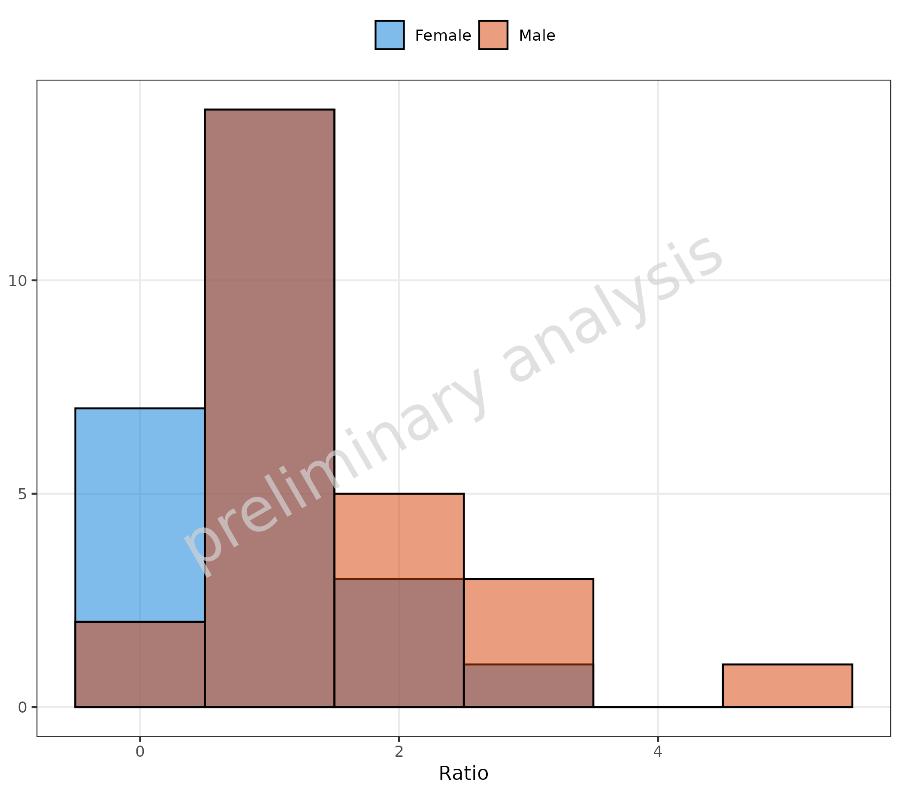
2.1.5 Omit Data Points Flagged as Missing Dependent Variable (MDV)
If some of the data should be omitted, we can do this by mapping a
boolean to the aesthetic mdv. Below, we exclude data above
the value of 4:
plotHistogram(
data = histData,
mapping = aes(x = Ratio, fill = Sex, mdv = Ratio > 4),
metaData = metaData
)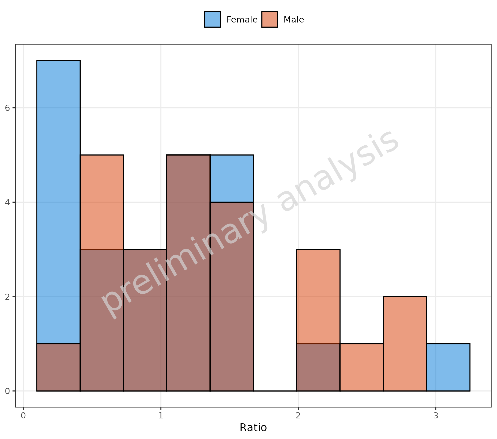
2.1.6 Stratified by a Combination of Columns
To stratify by a combination of columns, use the function
interaction for the mapping to groupby:
plotHistogram(
data = histData,
mapping = aes(x = Ratio, groupby = interaction(Sex, AgeBin, sep = "-")),
geomHistAttributes = utils::modifyList(
getDefaultGeomAttributes("Hist"),
list(position = "dodge")
),
metaData = metaData
)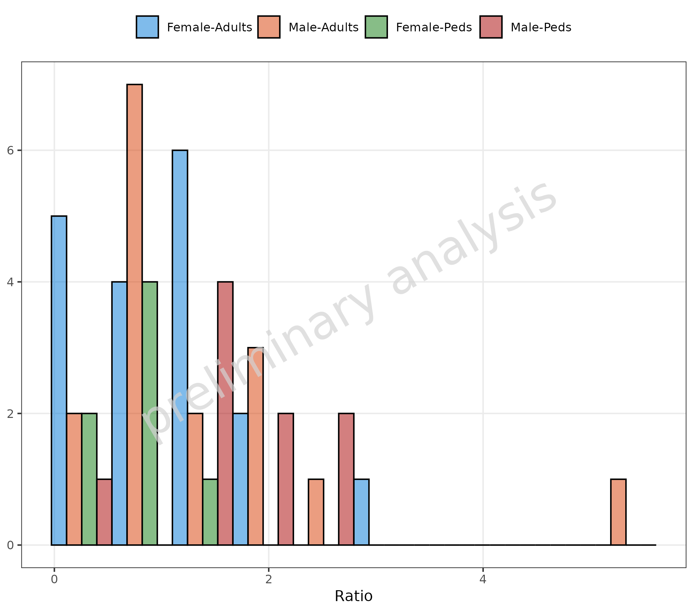
2.1.7 Customization of Binning
Use the input variable geomHistAttributes to change the
binning. The entries of this list are passed to
ggplot2::geom_histogram, which provides many possibilities
to customize the binning. Below, we define the bin boundaries by adding
the entry breaks to geomHistAttributes.
plotHistogram(
data = histData,
mapping = aes(x = Ratio, fill = Sex),
geomHistAttributes = list(position = position_nudge(), breaks = seq(0, 5, 0.5)),
metaData = metaData
)You could also map a binning function to the aesthetic
x. Below, ggplot2::cut_number is used to
create 3 bins with equal numbers of observations. The data is now
displayed as categorical data.
plotHistogram(
data = histData,
mapping = aes(x = cut_number(Ratio, n = 3, labels = c("low", "mean", "high")), fill = Sex),
geomHistAttributes = list(position = position_nudge()),
metaData = metaData
) + labs(x = "Ratio")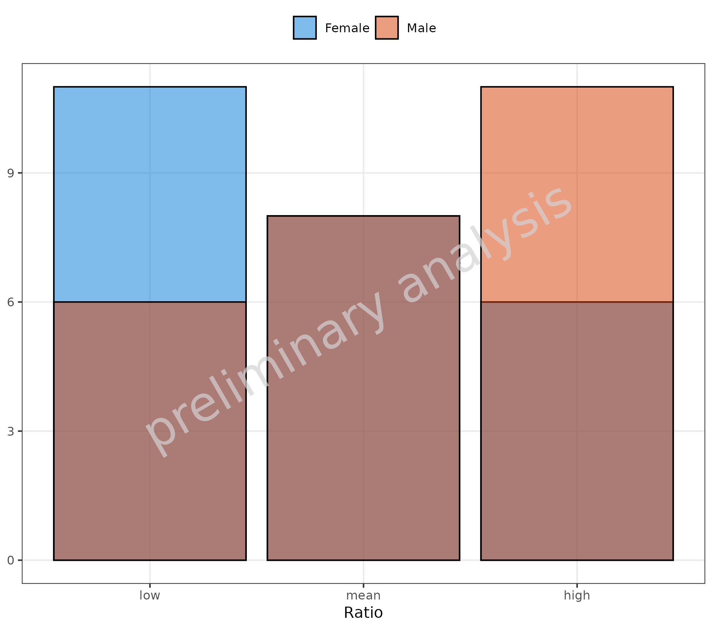
2.2 Frequency
If the variable plotAsFrequency is set to TRUE and:
-
positionisstack: frequency is calculated as count per bin / total (A) -
positionis NOTstack: frequency is calculated as count per bin / per group (B)
# A
plotHistogram(
data = histData,
mapping = aes(x = Ratio, groupby = Sex),
metaData = metaData,
plotAsFrequency = TRUE,
geomHistAttributes = list(bins = 10, position = "stack")
) + labs(tag = "A", caption = "Frequency is calculated as count per bin / total")
# B
plotHistogram(
data = histData,
mapping = aes(x = Ratio, groupby = Sex),
metaData = metaData,
plotAsFrequency = TRUE
) + labs(tag = "B", caption = "Frequency is calculated as count per bin / per group")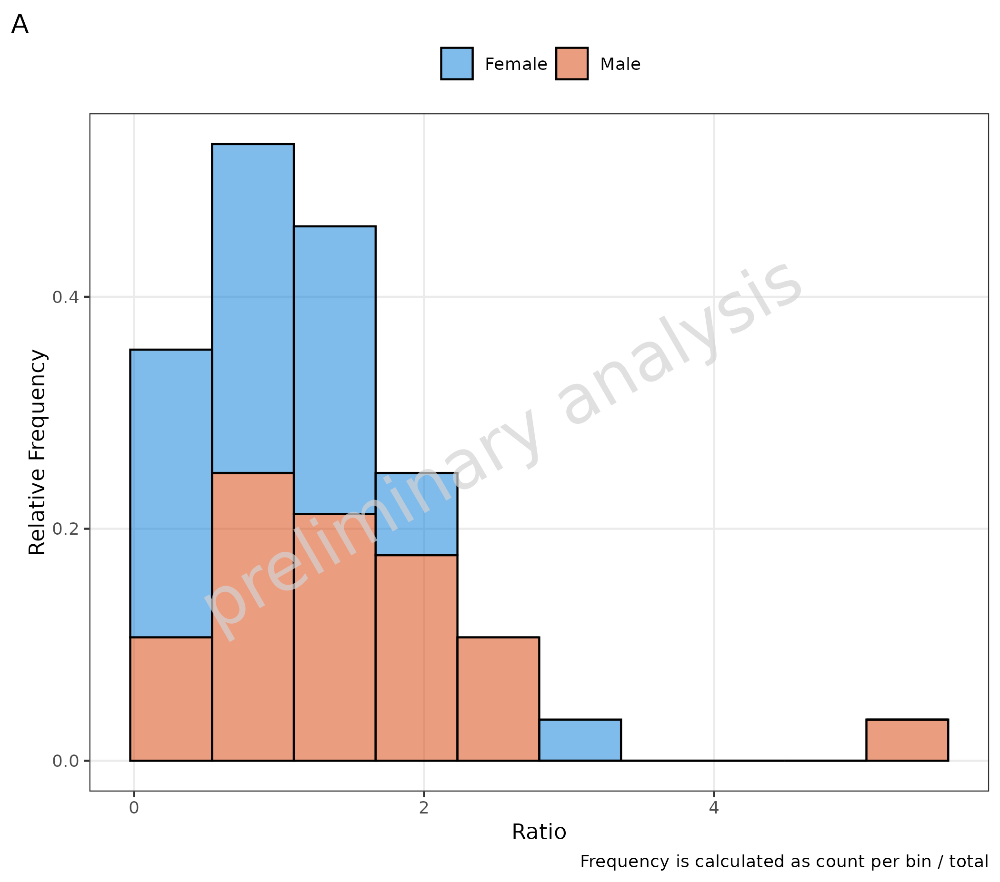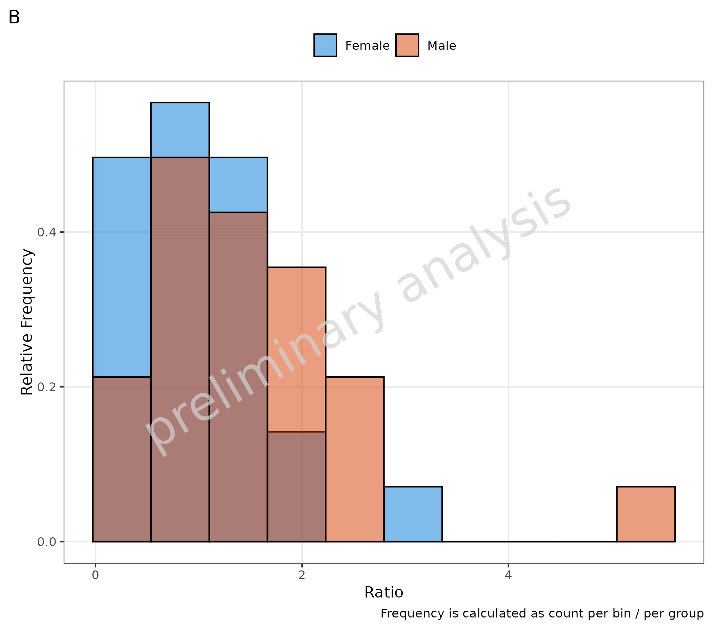
Both plots could also be calculated by directly setting
y in the mapping:
-
positionisstack: frequency is calculated as count per bin / total (C) -
positionis NOTstack: frequency is calculated as count per bin / per group (D)
# C
plotHistogram(
data = histData,
mapping = aes(x = Ratio, fill = Sex, y = after_stat(count / sum(count))),
metaData = metaData,
plotAsFrequency = FALSE,
geomHistAttributes = list(bins = 10, position = "stack")
) + labs(tag = "C", caption = "Frequency is calculated as count per bin / total")
# D
plotHistogram(
data = histData,
mapping = aes(x = Ratio, fill = Sex, y = after_stat(density)),
metaData = metaData,
plotAsFrequency = FALSE
) + labs(tag = "D", caption = "Frequency is calculated as count per bin / per group")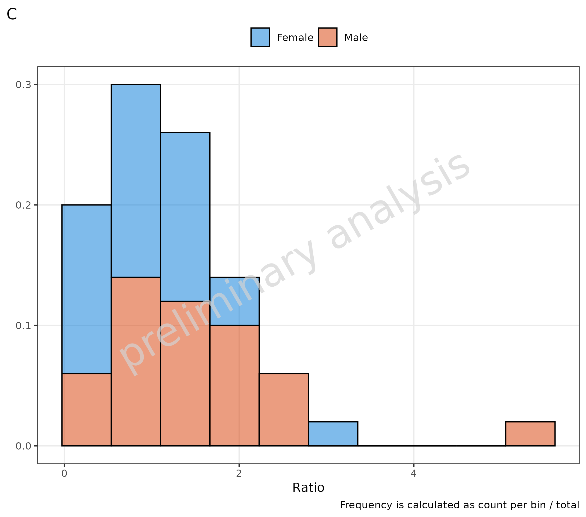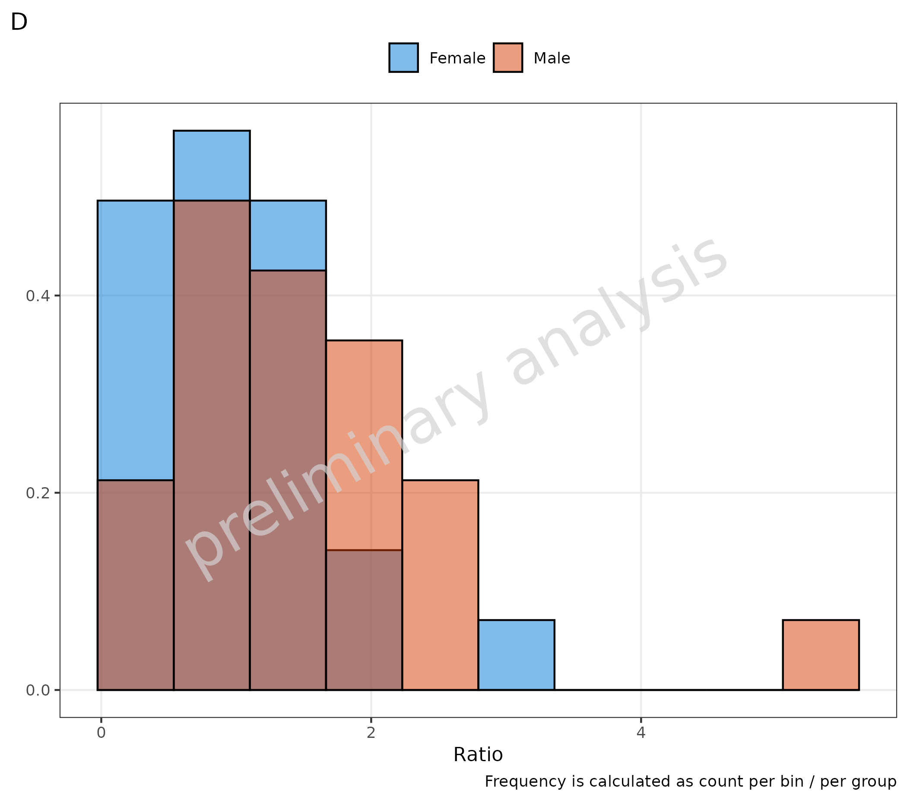
3. Distribution Fit
The optional input variable distribution provides the
possibility of fitting the data distribution. All distributions from the
package {stats} are available (see
?stats::distributions). Internally,
ggh4x::stat_theodensity is used for the fit. Check the help
for more details.
For the most common distributions, the keys “normal” (instead of
norm) and “lognormal” (instead of lnorm) are
also accepted.
The vertical line indicates the mean. The function to calculate the
mean is determined by the input variable meanFunction.
Available options are:
-
none(no line is plotted) -
mean(arithmetic mean) -
geomean(geometric mean) median-
auto(default, selects the mean function according to the selected distribution)
Below are examples for:
3.1 Fit of a Normal Distribution with Mean as Vertical Line
# Plot normal distribution
plotHistogram(
data = histDataDistr,
mapping = aes(x = Obs, fill = Sex),
metaData = metaDataDistr,
distribution = "normal"
)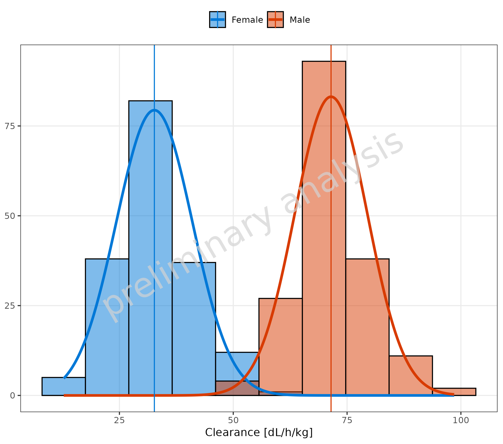
3.2 Fit of a Chi-Squared Distribution without Vertical Line
plotHistogram(
data = histDataDistr,
mapping = aes(x = Obs, groupby = Sex),
metaData = metaDataDistr,
distribution = "chisq",
meanFunction = "none"
)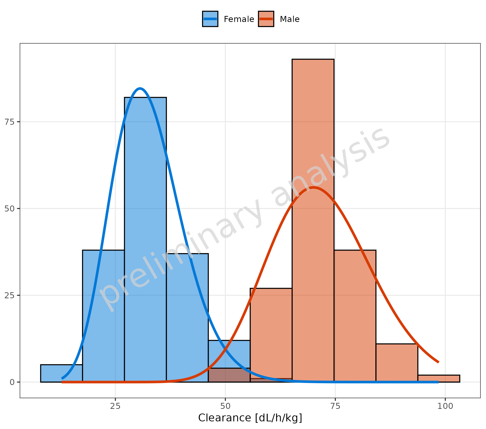
3.3 Fit of Stacked Data
With the option stack, it is also possible to get the
distribution of the sum only.
plotHistogram(
data = histData,
mapping = aes(x = Ratio, fill = Sex),
metaData = metaData,
geomHistAttributes = utils::modifyList(
getDefaultGeomAttributes("Hist"),
list(position = "stack")
),
distribution = "normal"
)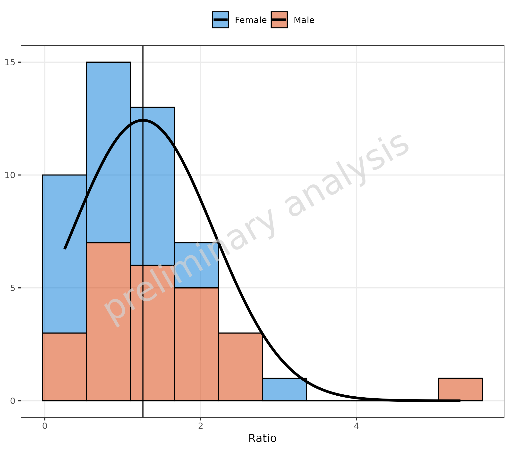
3.4 Fit with Frequency TRUE
To fit a frequency, select a distribution (here “normal”) and set the
variable plotAsFrequency to TRUE.
plotHistogram(
data = histDataDistr,
mapping = aes(x = Obs, fill = Sex),
metaData = metaDataDistr,
distribution = "normal",
plotAsFrequency = TRUE
)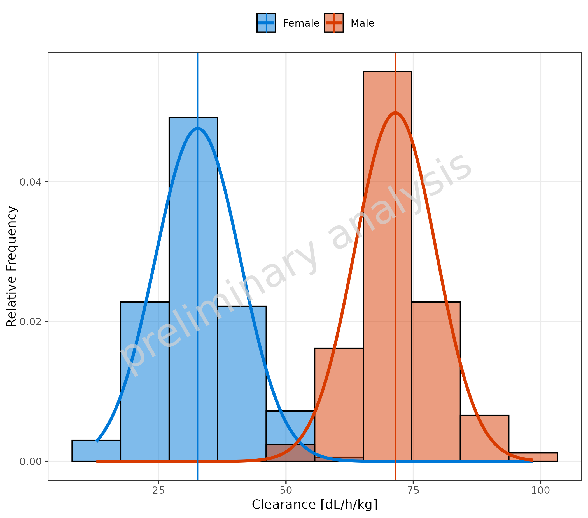
3.5 Fit with Frequency TRUE and Stacked Data
plotHistogram(
data = histData,
mapping = aes(x = Ratio, fill = Sex),
metaData = metaData,
geomHistAttributes = utils::modifyList(
getDefaultGeomAttributes("Hist"),
list(position = "stack")
),
distribution = "normal",
plotAsFrequency = TRUE
)
3.6 X-Axis on Log Scale for Distribution Fit
As the fit is based on binning, and binning is dependent on scale, a
log scale has to be set before the distribution fit. Please use the
variable xscale = 'log' and do not add a
{ggplot} like scale_x_log10.
plotHistogram(
data = histDataDistr,
mapping = aes(x = Obs, fill = Sex),
metaData = metaDataDistr,
xscale = "log",
distribution = "norm",
meanFunction = "none"
) + labs(tag = "A")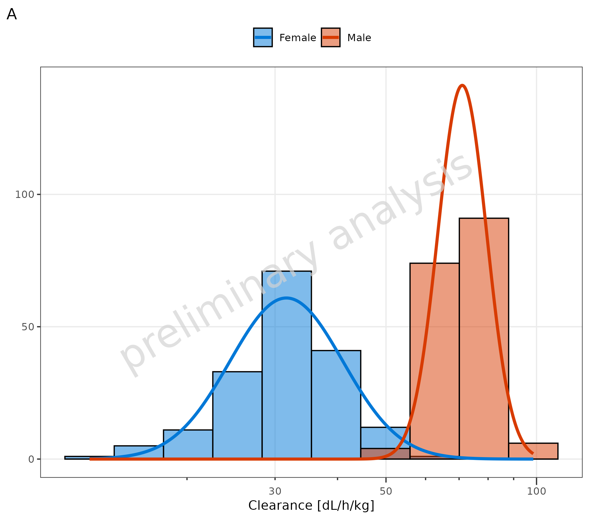
4. Histogram for Categorical Data
The function plotHistogram can also be used to plot
categorical data with a bar plot. Internally, the function switches from
geom_histogram to geom_bar. With default
inputs, the function switches automatically to a bar plot if the data is
a factor or non-numeric. (See plot A). It can also be done manually by
setting the variable asBarPlot to TRUE (see plot B).
# A Input is factor
plotHistogram(
data = histData,
mapping = aes(x = AgeBin, fill = Sex),
metaData = metaData
) + labs(tag = "A")
# B Set asBarPlot = TRUE to convert input to factor
plotHistogram(
data = histData,
mapping = aes(x = round(histData$Age / 10) * 10, fill = Sex),
asBarPlot = TRUE,
metaData = metaData
) + labs(x = "Age rounded to 10 years", tag = "B")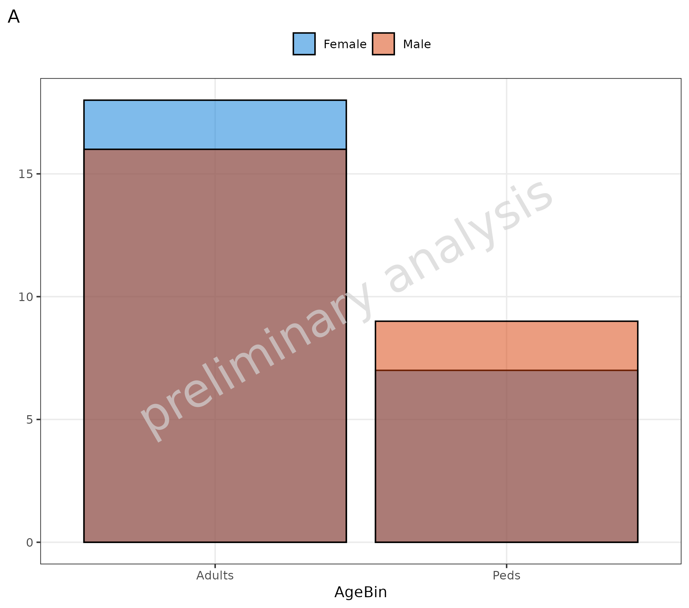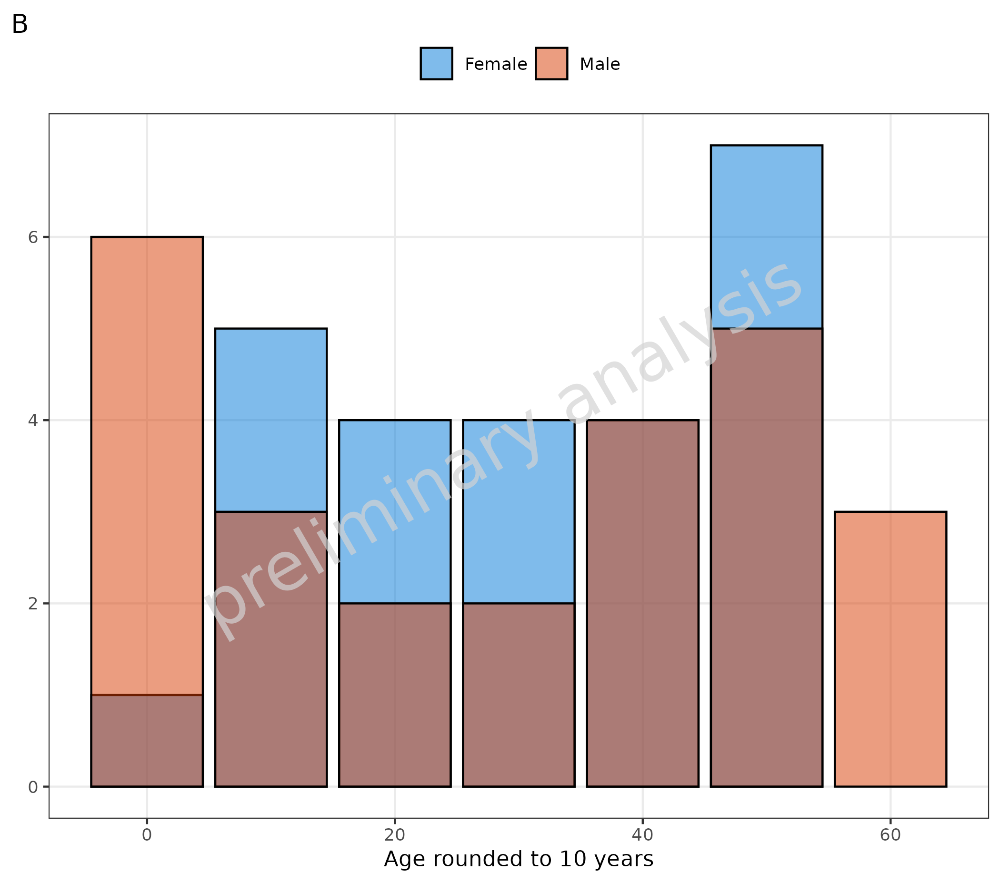
```